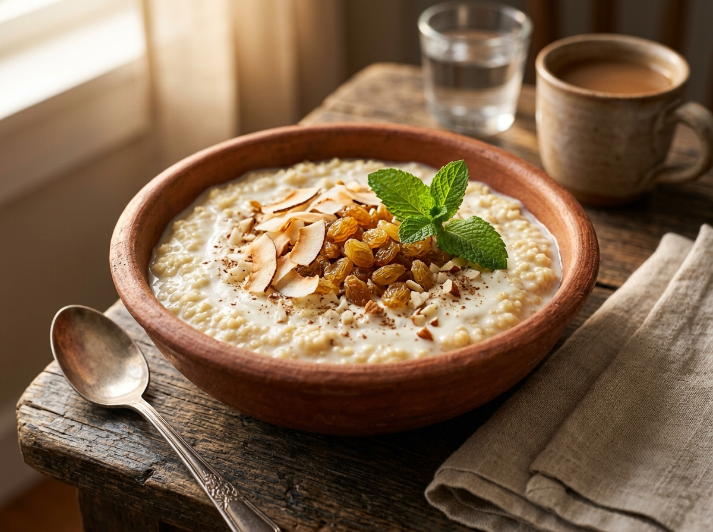

Notre Histoire
La passion de la cuisine sénégalaise depuis 2019
La passion de la cuisine sénégalaise depuis 2019

SEN APPLE SAUCE est né en 2019 d'un rêve simple : créer un espace où la cuisine sénégalaise est célébrée dans toute sa richesse et sa diversité. Un endroit où chaque plat raconte une histoire, chaque saveur évoque un souvenir, chaque repas devient une expérience mémorable.
Notre fondatrice, Aïda Fall, cuisinière passionnée originaire de Saint-Louis, a grandi entourée des odeurs envoûtantes du thiéboudiène que préparait sa grand-mère chaque dimanche. C'est cet amour des saveurs authentiques qui l'a poussée à ouvrir SEN APPLE SAUCE.
Aujourd'hui, notre équipe de cuisiniers passionnés perpétue ces traditions avec fierté, en utilisant des épices importées directement du Sénégal et des produits frais sélectionnés chaque matin.
Au service de la gastronomie sénégalaise
Recettes traditionnelles sénégalaises
Qui reviennent encore et encore
Préparé avec amour chaque jour
Chaque décision, chaque plat, chaque interaction avec nos clients est guidée par ces valeurs fondamentales qui définissent l'identité de SEN APPLE SAUCE.
Nous respectons scrupuleusement les recettes traditionnelles sénégalaises transmises de génération en génération. Pas de raccourcis, pas de compromis sur la saveur.
Nous sélectionnons chaque matin les meilleurs ingrédients frais. Nos épices sont importées directement du Sénégal pour garantir une saveur authentique et incomparable.
Le Teranga — l'hospitalité sénégalaise — est au cœur de notre identité. Chaque client est accueilli comme un invité de marque, avec chaleur et générosité.
La table sénégalaise est avant tout un lieu de partage et de joie. Nous créons une ambiance chaleureuse où familles et amis se retrouvent autour d'un bon repas.
Nous soutenons activement les producteurs et artisans locaux sénégalais, en valorisant les circuits courts et en contribuant à l'économie locale.
Tout en respectant les traditions, nous n'hésitons pas à apporter une touche moderne à notre cuisine et à notre cadre pour offrir une expérience contemporaine.
Notre ambition est de faire de SEN APPLE SAUCE une référence gastronomique sénégalaise, un ambassadeur de la richesse culinaire du Sénégal, un lieu où chaque repas est une invitation à découvrir la beauté et la profondeur de notre culture.